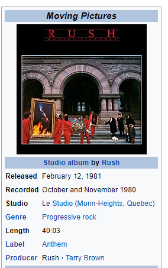
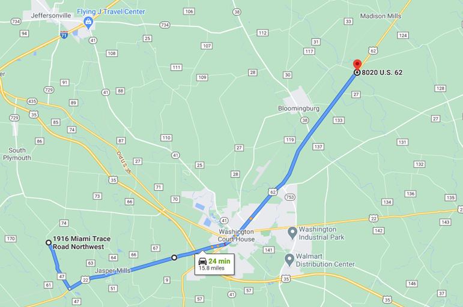
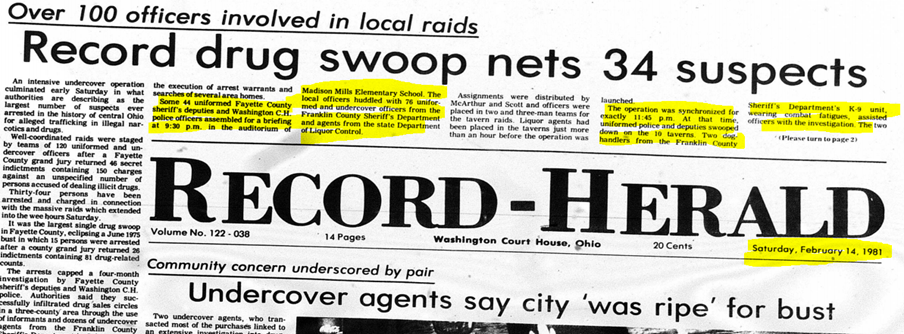
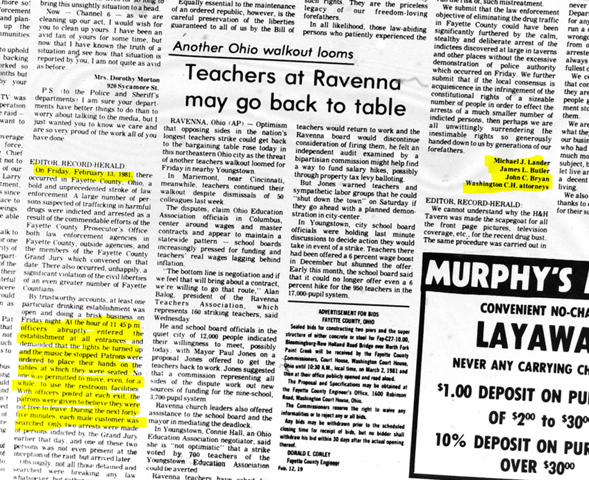
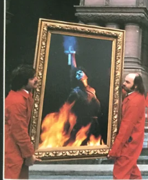

How one of rock’s greatest albums and a Columbus radio station inadvertently kept a young
bassist out of jail on Friday the 13th, February 1981.
A true story from Washington Court House, Ohio.
I. Rehearsal & The Radio Announcement
On the evening of February 13, 1981, I was rehearsing with my band—myself on bass and vocals, Curtis Conely on drums, Jimmy Arledge on guitar and vocals, and Sam Beedy on guitar and vocals—at what I believe was 1916 Miami Trace Rd NW, Washington Court House (WCH), Ohio. At the time, I was living with friends at 8020 US Route 62, just north of WCH. While listening to QFM-96 (WLVQ-FM) out of Columbus, OH, I learned that the new Rush album, Moving Pictures, would be played in its entirety that Friday night. Determined to record it onto cassette tape using my stereo receiver and tape deck, I knew I needed to leave practice by 10 PM to make it home in time.

II. The Race Home
The trip would take approximately 25 minutes to drive. I also wanted time to get settled, a few joints rolled (true at the time 😊), and the cassette deck ready to record when WLVQ-FM 96 started playing the whole album. In fact, as you can see from the image above from Wikipedia, Moving Pictures had just been released the day before, on February 12, 1981.

OK. I got home, got the album recorded, and then went to bed.
III. The Next Morning's News
Now, on to the next day, which adds to this true story. According to the Saturday, February 14th, Record Herald Newspaper (see below), there was another local “Friday the 13th” event that was much less advertised. It was a coordinated effort that originated from Madison Mills, Ohio, just north of where I lived. In fact, I remember passing at least six law enforcement cars on Route 62 NE, back to back, on the way home, which I found unusual. However, I was looking forward to listening to and recording the latest album by one of my favorite bands.

IV. A Lucky Escape
Of most importance: Had it not been for the Rush Moving Pictures album release that night, I would have surely stopped at a bar, with pot on me (again true at the time 🤘), and gotten searched and arrested for possession.
In fact, a Letter to the Editor of the same newspaper from local attorneys validated my concern:

Therefore, I seriously owe my avoidance of being arrested that night to Rush and their Moving Pictures album, as well as the WLVQ-FM 96 radio station for playing the album in its entirety, which motivated and enabled me to get back home in time to record it.
One of my favorite songs on the album is Witch Hunt. Now that marijuana is legal in Ohio, and it seems to be accepted in many circles, I can't help but think that Friday the 13th was a kind of witch hunt.
